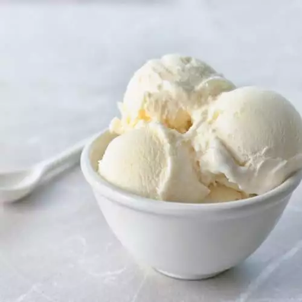

See all Odin recipes
Vanilla Ice Cream

Eat big to get big, says Odin. Wait, this is ice cream though..
This homemade ice cream is easy to make with just 4 simple ingredients!
Ingredients
- 2 ¼ cups milk
- 1 cup heavy whipping cream
- ¾ cup white sugar
- 2 teaspoons vanilla extract
Steps:
- Stir milk, cream, and sugar in a saucepan over low heat until sugar has dissolved.
Heat just until the mixture is hot and a small ring of foam appears around the edge.
- Transfer cream mixture to a pourable container such as a large measuring cup.
Stir in vanilla extract and chill mix thoroughly, at least 2 hours.
(Overnight is best.)
- Pour cold ice cream mix into an ice cream maker, turn on the machine,
and churn according to manufacturer's directions, 20 to 25 minutes.
- When ice cream is softly frozen, serve immediately
or place a piece of plastic wrap directly on the ice cream
and place in the freezer to ripen, 2 to 3 hours.